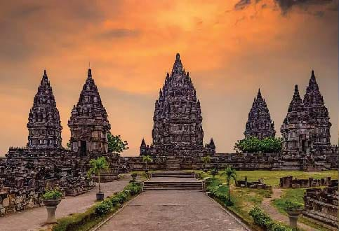

Peserta didik mampu mengembangkan keterampilan berbahasa secara terpadu melalui kegiatan menyimak, membaca, berbicara, dan menulis.
Dalam kegiatan membaca dan menyimak, peserta didik dapat memahami unsur-unsur intrinsik cerita dengan baik.
Dalam kegiatan menulis, peserta didik mampu mengungkapkan kembali unsur-unsur intrinsik suatu cerita secara runtut dan tepat.
Melalui kegiatan berbicara, peserta didik dapat membaca cerita dengan intonasi dan volume yang sesuai konteks serta mempresentasikan pemahaman mereka terhadap unsur-unsur cerita secara jelas dan menarik di depan kelas.
Tujuan Pembelajaran :
Melalui kegiatan Berbicara dengan volume dan konteks yangtepat dan jelas, peserta didik membaca cerita atau bacaan dengan intonasi yang tepat.
Melalui kegiatan membaca dan menyimak, peserta didik dapat memahami unsur-unsur intrinsik suatu cerita.
Melalui kegiatan menulis, peserta didik dapat menuliskan unsur-unsur intrisnsik satu cerita.
Melalui kegiatan berbicara, peserta didik dapat mempresentasikan unsur-unsur cerita di depan kelas dengan tepat sehingga dapat menarik minat pendengarnya.
Apa saja unsur intrinsik dalam cerita?
Tema
Tema adalah inti permasalahan yang mendasari suatu cerita.
Tokoh
Tokoh adalah pelaku atau pemeran dalam cerita. jalannya suatu cerita didukung oleh tokoh
Penokohan
Penokohanadalah pemberian watak pada tokoh. misalnya pemaaf, pemarah, penyayang, dan penyabar.
Latar
Latar adalah perihal mengenaik waktu, tempat, dan susana dalam cerita. latar dapat berupa latar tempat, latar waktu, dan latar susana.
Alur
Alur adalah urutan pada jalannya suatu cerita. alur dibagi menjadi tiga, yaitu alur maju, alur mundur, dan alur campuran.
Amanat
Amanat adalah pesan yang disampaikan dalam cerita. pesan tersebut memuat nasihat-nasihat yang bermanfaat dalam kehidupan sehari-hari.
Apa saja unsur ekstrinsik dalam cerita?
Latar Belakang Pengarang
Pengarang adalah orang yang menulis cerita.
Cerita bisa dipengaruhi oleh:
👉 Pengalaman hidup pengarang
👉 Lingkungan tempat tinggal
👉 Pendidikan atau kebiasaan pengarang
🔹 Contoh: Jika pengarang pernah tinggal di desa, maka ceritanya bisa banyak tentang kehidupan di desa.
Nilai dalam Cerita
Cerita juga bisa mengandung nilai-nilai kehidupan yang penting. Nilai-nilai ini tidak langsung terlihat, tapi bisa dirasakan dari isi cerita.
Berikut nilai-nilai yang umum dijumpai:
a. Nilai Moral (Kebaikan atau Keburukan)
👉 Nilai yang mengajarkan perilaku baik atau buruk.
🔹 Contoh: Kejujuran, tidak boleh mencuri, saling membantu.
b. Nilai Sosial
👉 Nilai yang berhubungan dengan hubungan antar manusia di masyarakat.
🔹 Contoh: Tolong-menolong, hidup rukun, saling menghargai.
c. Nilai Religius
👉 Nilai yang berhubungan dengan agama atau kepercayaan kepada Tuhan.
🔹 Contoh: Berdoa sebelum makan, bersyukur, salat tepat waktu.
d. Nilai Budaya
👉 Nilai yang berkaitan dengan kebiasaan, adat, atau tradisi masyarakat.
🔹 Contoh: Upacara adat, berpakaian sopan sesuai budaya.

Asal Usul Semarang
Pada zaman dahulu di kerajaan Demak hidup seorang pangeran. Namanya Raden Made Pandan. Disamping sebagai bangsawan kerajaan ia juga dikenal sebagai seorang ulama atau ahli agama Islam yang cukup disegani berbagai kalangan masyarakat. Dia mempunyai seorang putra bernama Raden Pandanarang. Raden Pandanarang dikenal sebagai anak yang baik, sopansantun, ramah dan hormat kepada kedua orang tuanya. Pada suatu hariRaden Made Pandan mengajak puteranya dan beberapa pengiring pergi dari wilayah kesultanan Demak. setelah beberapa hari, sampailah mereka di tempat yang subur. Di sana mereka mendirikan rumah. Raden Made Pandan juga mendirikan pondok pesantren dan mengajarkan agama Islam ditempat itu. Pada suatu hariRaden Made merasa bila akan menghadap Allah, maka ia berwasiat kepada putranya. “anakku, jika aku mati, teruskanlah perjuangan kita menyebarkan agama islam. jangan sekali-kali kau tinggalkan daerah ini. berpegang teguhlah kepada ajaran para wali. insyallah kelak hidup mu menjadi mulia, selamat dunia akhirat.” Pesan itu selalu terngiang di teliga Raden Pandanarang. Setelah ayahnya meninggal dunia, ia terus melanjutkan perjuangannya mengajarkan agama islam. Pada suatu hari ketika menggarap sawahRaden Pandanarang dan pengikutnya melihat suatu keanehan. Di atas tanah yang subur disela-sela pepohonan yang hijau nampak beberapa pohon asam tumbuh saling berjauhan atau jarang-jarang. Semua orang merasa heran melihat jarak antara pohon asam yang satu dengan yang lainnya. Raden Pandanarang berkata,”mengapa pohon asam itu tumbuh berjauhan, padahal tanah di sini subur. Mestinya pohon-pohon asam itu tumbuh berdekatan. “ benar raden…..!” sahut beberapa orang pengikutnya. “memang ini hal yang tak lazim terjadi, sangat aneh.” Raden Pandanarang berkata lagi.” kalau begitu daerah ini ku namakan semarang yaitu dari kata asem yang jarang.”
Unsur Intrinsik Cerita "Asal Usul Semarang"
👉 Tema Asal-usul nama daerah dan perjuangan menyebarkan agama Islam.
👉 Tokoh dan Penokohan Raden Made Pandan: tokoh utama, seorang ulama yang bijaksana dan taat beragama. Raden Pandanarang: anak yang baik, sopan, rajin, dan meneruskan perjuangan ayahnya. Para pengikut: rakyat yang setia dan patuh.
👉 Latar (Setting) Tempat: Kerajaan Demak, daerah subur tempat pohon asam tumbuh, sawah. Waktu: Zaman dahulu kala. Suasana: Tenang, religius, penuh semangat perjuangan.
👉 Alur (Plot) Awal: Raden Made Pandan dan putranya meninggalkan Kesultanan Demak. Tengah: Mereka tinggal di daerah subur, membangun pesantren dan mengajar agama Islam. Puncak masalah: Raden Made Pandan meninggal dan berwasiat kepada putranya. Akhir: Raden Pandanarang melanjutkan perjuangan ayahnya dan menamai daerah itu “Semarang” karena pohon asem yang tumbuh jarang-jarang.
👉 Amanat Kita harus taat kepada orang tua, meneruskan kebaikan, menyebarkan ilmu yang bermanfaat, dan menghargai warisan leluhur.
👉 Sudut Pandang Orang ketiga (menggunakan nama tokoh seperti “Raden Pandanarang”, “ia”, “mereka”).
Unsur Ekstrinsik Cerita "Asal Usul Semarang"
👉 Latar Belakang Budaya Cerita ini mencerminkan budaya masyarakat Jawa, terutama pada masa Kerajaan Demak, yang menjunjung tinggi agama, pesantren, dan nilai adat.
👉 Nilai Agama (Religius) Terdapat ajaran Islam dan dakwah yang dilakukan oleh tokoh-tokohnya. Ada juga pesan tentang hidup mulia dan selamat dunia akhirat.
👉 Nilai Moral Mengajarkan kebaikan, seperti: Taat kepada orang tua Berjuang dengan ikhlas Menjaga amanah dan pesan orang tua
👉 Nilai Sejarah/Tradisi Cerita ini mengandung asal-usul nama Semarang, yang berasal dari kata "Asem yang jarang" – bagian dari cerita rakyat yang menjelaskan nama suatu tempat
Candi Prambanan
Dahulu kala, di Desa Prambanan, ada sebuah kerajaan yang dipimpin oleh Prabu Baka. la memiliki seorang putri yang sangat cantik bernama Roro Jonggrang. Suatu ketika, Prambanan dikalahkan oleh Kerajaan Pengging yang dipimpin oleh Bandung Bondowoso. Prabu Baka tewas di medan perang. Dia terbunuh oleh Bandung Bondowoso yang sangat sakti. Bandung Bondowoso kemudian menempati Istana Prambanan. Melihat putri dari Prabu Baka yang cantik jelita yaitu Roro Jonggrang, timbul keinginannya untuk memperistri Roro Jonggrang. Roro Jonggrang tahu bahwa Bandung Bondowoso adalah orang yang membunuh ayahnya. Karena itu, ia mencari akal untuk menolaknya. Lalu, ia mengajukan syarat dibuatkan 1.000 buah candi dan dua buah sumur yang dalam. Semuanya harus selesai dalam semalam. Bandung Bondowoso menyanggupi persyaratan Roro Jonggrang. Ia meminta pertolongan kepada ayahnya dan mengerahkan balatentara roh-roh halus untuk membantunya pada hari yang ditentukan. Pukul empat pagi, hanya tinggal lima buah candi yang belum selesai dan kedua sumur hampir selesai. Mengetahui 1.000 candi telah hampir selesai, Roro Jonggrang ketakutan. Apa yang harus kulakukan untuk menghentikannya?” pikirnya cemas membayangkan ia harus menerima pinangan Bandung Bondowoso yang telah membunuh orangtuanya. Akhirnya, ia pergi membangunkan gadis-gadis di Desa Prambanan dan memerintahkan untuk menghidupkan obor-obor dan membakar jerami, memukulkan alu pada lesung, dan menaburkan bunga-bunga yang harum. Suasana saat itu menjadi terang dan riuh. Semburat merah memancar di langit dengan seketika. Ayam jantan pun berkokok bersahut-sahutan. Mendengar suara itu, para roh halus segera meninggalkan pekerjaan. Mereka menyangka hari telah pagi dan matahari akan segera terbit. Pada saat itu hanya tinggal satu sebuah candi yang belum dibuat. Bandung Bondowoso sangat terkejut dan marah menyadari usahanya telah gagal. Dalam amarahnya, Bandung Bondowoso mengutuk Roro Jonggrang menjadi sebuah arca untuk melengkapi sebuah buah candi yang belum selesai. Batu arca Roro Jonggrang diletakkan di dalam ruang candi yang besar. Hingga kini, candi tersebut disebut dengan Candi Roro Jonggrang. Sementara itu, candi-candi di sekitarnya disebut dengan Candi Sewu (Candi Seribu) meskipun jumlahnya belum mencapai 1.000.
Unsur Intrinsik “Candi Prambanan”
👉 Tema Kisah cinta, balas dendam, dan asal-usul Candi Prambanan.
👉 Tokoh & Perwatakan - Roro Jonggrang: Cantik, cerdas, tidak mudah menyerah. - Bandung Bondowoso: Sakti, kuat, pemarah. - Prabu Baka: Raja yang tewas di medan perang. - Roh halus: Membantu membangun candi.
👉 Latar Latar Tempat : Desa Prambanan, Istana Prambanan, lokasi pembangunan candi. Latar Waktu : jaman dahulu, malam hari hingga menjelang pagi.
👉 Alur Alur maju: dimulai dari perang, pinangan Bandung Bondowoso, syarat Roro Jonggrang, pembangunan candi, hingga Roro Jonggrang dikutuk.
👉 Amanat - Jangan memaksakan kehendak. - Jangan membalas dendam dengan tipu daya. - Kejujuran dan niat baik lebih penting dari kekuatan.
👉 Sudut Pandang Orang ketiga (pengarang menceritakan semua tokoh dari luar).
Unsur Ekstrinsik “Candi Prambanan”
👉 Nilai Budaya Cerita tentang asal-usul Candi Prambanan dan budaya masyarakat Jawa seperti membakar jerami, memakai lesung, dan upacara desa.
👉 Nilai Moral Tidak baik menipu orang lain. Jangan memaksakan kehendak. Ampuni orang yang bersalah.
👉 Nilai Sosial Gadis-gadis desa saling membantu, menunjukkan kerja sama dalam masyarakat.
👉 Latar Sejarah dan Kepercayaan Orang zaman dulu percaya pada kekuatan gaib seperti roh halus, serta cerita legenda sebagai penjelasan tentang bangunan bersejarah.
Rawa Pening
Pada zaman dahulu, hiduplah seorang anak yang sakti. Kesaktiannya ini membuat seorang menyihir jahat iri. Penyihir jahat menyihir anak itu, sehingga tubuhnya penuh luka dengan bau yang sangat menyengat. Luka-luka baru akan muncul begitu luka lama mulai kering. Keadaannya kondisi tubuhnya itu, tidak ada seorang pun yang mau berhubungan dengannya. Jangankan bertegur sapa, berdekatan saja orang tidak mau. Mereka takut tertular. Suatu hari, anak ini bermimpi ada seorang perempuan tua yang dapat menyembuhkan penyakitnya. Ia pun berkelana mencari perempuan tua dalam mimpinya tersebut. Di setiap kampung yang ia datangi, ia selalu ditolak oleh penduduk. Mereka merasa jijik dan mengusir anak ini. Akhirnya, sampailah ia di sebuah kampung yang sebagian besar penduduknya adalah orang-orang yang sombong. Tidak banyak orang yang miskin di desa itu. Mereka akan diusir atau dibuat tidak nyaman kalau tinggal di sana. Hal ini mengusik hati anak kecil ini. Pada sebuah pesta yang diselenggarakan di kampung itu, anak kecil ini berhasil masuk. Namun, orang-orang segera mengusirnya dan mencaci-makinya. Ia langsung diseret keluar. Pada saat terseret, ia berpesan kepada orang-orang itu supaya lebih memerhatikan orang tak punya. Mendengar kata-kata anak itu, beberapa orang makin marah, bahkan meludahinya sambil berkata, “Dasar anak setan, anak buruk rupa. Anak itu merasa terluka dengan perlakuan orang-orang tersebut. Lalu, ia menancapkan sebuah lidi di tanah don berkata, “Tak ada satu pun yang bisa mencabut lidi ini dari tanah, hanya aku yang bisa melakukannya!”orang-orang meragukan ucapan anak tersebut. Mereka pun mencoba mencabut lidi tersebut. Namun, tak seorangpun dapat melakukannya. Dalam beberapa hari, lidi itu tak bisa tercabut. Suatu hari, secara diam-diam, anak itu datang dan mencabut lidi itu. Tanpa sepengetahuannya, ada seorang warga yang melihatnya dan melaporkannya kepada warga yang lain. Dari tempat lidi itu dicabut, mengalirlah mata air. Semakin lama, air itu semakin deras. Air menenggelamkan daerah tersebut, sehingga menjadi sebuah telaga yang kini bernama Telaga Rawa Pening. Tidak ada yang selamat dari musibah itu kecuali seorang perempuan tua yang berbaik hati memberinya tempat tinggal dan merawatnya. Secara ajaib penyakit kulit anak itu sembuh. Namun, penyihir jahat yang telah menyihir si anak itu tidak terima dengan kesembuhan itu. Kemudian, ia menyihir anak itu menjadi seekor ular besar dengan sebuah kalung genta di lehernya. Konon, ular ini sering keluar dari sarangnya pada tengah malam. Setiap kali bergerak, dentingan kalung di lehernya selalu berbunyi klentang-klenting. Bunyi inilah yang kemudian membuatnya dinamakan Baru Klinting. Kemunculan ular itu diyakinin masyarakat sebagai tando keberuntungan bagi nelayan nelayan yang tidak mendapat ikan. Kini, Telaga Rama Pening adalah objek wisata yang sangat populer di Jawa Tengah. Tempat ini terletak di Desa Bukit Cinta, Kabupaten Ambarawa.
Unsur Intrinsik “Rawa Pening”
👉 Tema Kesabaran, kebaikan hati, dan asal-usul Telaga Rawa Pening.
👉 Tokoh & Perwatakan - Anak sakti / Baru Klinting: Sabar, tabah, sakti, baik hati. - Penyihir jahat: Iri hati dan jahat. - Warga desa: Sombong, kasar, tidak peduli. - Perempuan tua: Baik hati, peduli, suka menolong.
👉 Latar Latar Tempat : Beberapa desa/kampung, tempat pesta, lokasi lidi ditancapkan, Telaga Rawa Pening. Latar Waktu : Zaman dahulu, siang dan malam hari (khususnya tengah malam untuk kemunculan ular).
👉 Alur Cerita Alur maju (cerita dimulai dari anak sakit, berkelana, ditolak, hingga terbentuknya Rawa Pening dan berubah jadi ular).
👉 Amanat - Jangan menilai seseorang dari penampilannya. - Jangan sombong dan suka merendahkan orang lain. - Bersikap baiklah kepada sesama. - Kebaikan akan dibalas dengan kebaikan.
👉 Sudut Pandang Orang ketiga (narator menceritakan dari luar semua tokoh).
Unsur Ekstrinsik “Rawa Pening”
👉 Nilai Budaya - Cerita rakyat sebagai penjelasan asal-usul danau. - Kepercayaan pada kekuatan magis seperti penyihir dan anak sakti. - Tradisi pesta desa.
👉 Nilai Moral - Tidak boleh sombong dan jahat terhadap orang miskin atau berbeda. - Orang yang baik dan sabar akan mendapat balasan yang baik.
👉 Nilai Sosial - Sikap warga desa yang memandang rendah orang miskin memperlihatkan adanya ketimpangan sosial. - Perempuan tua sebagai contoh warga yang peduli dan saling tolong-menolong.
LATIHAN 1
Bacalah kutipan cerita berikut! “Rudi berlari mengejar bus yang mulai berjalan. Ia tak ingin terlambat sekolah. Keringat membasahi dahinya.” Unsur intrinsik yang paling menonjol dari kutipan tersebut adalah...
Jawaban: B
Apa yang dimaksud dengan tema dalam sebuah cerita?
Jawaban: D
Bacalah kutipan cerita! "Di sebuah desa kecil yang sepi, tinggal seorang petani tua yang rajin. Setiap pagi ia ke sawah dengan membawa cangkul dan semangat." Latar waktu dalam cerita tersebut adalah...
Jawaban: A
Mengapa tokoh dalam cerita disebut sebagai unsur intrinsik?
Jawaban: C
Amanat dalam cerita berfungsi untuk...
Jawaban: B
LATIHAN 2
Bacalah cuplikan berikut! “Lani merasa sedih karena boneka kesayangannya hilang. Ia mencarinya ke seluruh rumah, tapi tak ketemu.” Apa sifat tokoh yang tergambar dari kutipan di atas?
Jawaban: B
Sudut pandang orang pertama ditandai dengan penggunaan kata...
Jawaban: B
Di mana peristiwa dalam cerita berikut terjadi? "Suatu hari, setelah pulang sekolah, Dina dan teman-temannya bermain di taman kota. Mereka bermain kelereng dan bernyanyi bersama."
Jawaban: C
Apa yang membedakan tokoh protagonis dengan antagonis?
Jawaban: B
Mengapa memahami unsur intrinsik penting saat membaca cerita?
Jawaban: C
LATIHAN 3
Setelah membaca cerita "Si Kancil dan Buaya", menurutmu apakah amanat cerita tersebut sesuai dengan perilaku tokoh utama?
Jawaban: B
Cerita "Malin Kundang" menyampaikan pesan tentang durhaka kepada orang tua. Menurutmu, bagaimana seharusnya penulis mengakhiri cerita agar pembaca tetap mendapat pelajaran tanpa adanya kutukan?
Jawaban: B
Jika kamu menjadi guru, apakah kamu akan merekomendasikan cerita "Timun Mas" kepada siswa untuk belajar tentang keberanian? Mengapa?
Jawaban: B
Perhatikan tokoh berikut! Lina adalah anak yang pemarah, tidak mau mengalah, dan suka menyalahkan orang lain. Jika kamu menjadi pembaca, bagaimana penilaianmu terhadap tokoh Lina?
Jawaban: C
Cerita “Ande-Ande Lumut” memiliki banyak tokoh wanita yang ingin menjadi istri pangeran. Jika kamu mengevaluasi isi ceritanya, pesan moral utama yang bisa diambil adalah...
Jawaban: C
LATIHAN 4
Buatlah akhir cerita dari kisah berikut: “Danu menemukan seekor kucing kecil yang terluka di tepi jalan. Ia membawanya pulang.”
Jawaban: B
Jika kamu menulis ulang cerita “Bawang Merah dan Bawang Putih” dengan sudut pandang Bawang Merah, apa yang bisa kamu ubah agar ceritanya menjadi lebih seimbang?
Jawaban: A
Buatlah tokoh utama yang bisa menggantikan peran “Si Kancil” dalam cerita rakyat, dengan karakter yang serupa.
Jawaban: B
Jika kamu membuat cerita dengan latar “hutan ajaib di malam hari”, kejadian apa yang paling cocok dimasukkan agar cerita menarik?
Jawaban: A
Buatlah amanat yang cocok untuk cerita tentang seorang anak yang menolong hewan terluka.
Jawaban: C
Biodata Pembuat :
Nama : Sofia Rochamania
NIM : 21106051043
Peran Pengembangan : Penegembangan Aplikasi Mepsi
Email : rochmaniasofia@gmail.com
Aplikasi ini dibuat sebagai media pembelajaran interaktif untuk memahami unsur-unsur dalam cerita.